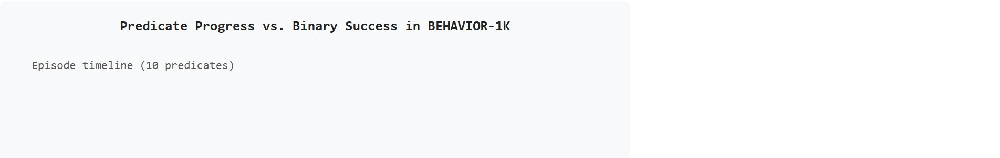

"Picking up a cup is a skill. Clearing the table, loading the dishwasher, and wiping the counter are a task. The household benchmark only cares about the task."
A Long-Horizon Scene Designer
This section assumes familiarity with the benchmark validity criteria introduced in section 12.1, particularly the distinction between what a score measures and what a benchmark claims to evaluate. The predicate-progress framework developed here carries forward into section 12.5, where success conditions expand to cover navigation efficiency and social safety, and into section 12.6, which shows how to read a leaderboard without being misled by splits or task-length imbalance.
A robot clears the table, carries dishes to the sink, and wipes the counter. It completes two of those three steps before failing at the third. Binary success says: zero. But the robot was nearly there, and a single binary zero erases every useful signal. This is why household robotics needs a different kind of benchmark right now: as of the 2023 benchmark release, state-of-the-art policies on BEHAVIOR-1K's 1,000 human-need tasks achieved fewer than 10 percent full-task success, yet partial predicate progress reached 40 percent. Without a metric that captures partial progress, methods look equally poor when they are not. This section shows you how to run a valid BEHAVIOR-1K evaluation in OmniGibson, record predicate traces instead of binary outcomes, and read results that actually distinguish learning from lucky shortcuts.
Ask a robot to make breakfast and it must cross a kitchen, open a refrigerator, crack eggs, find a pan, and set a table, twenty-odd actions where dropping a single mug at step nineteen erases everything a binary scoreboard would record. This section makes household and long-horizon benchmarks operational for exactly that case, focusing on tasks whose success depends on object states, room layouts, navigation, manipulation, and ordered subgoals rather than one isolated grasp. Throughout, a predicate means a testable boolean condition over simulator state, such as OnTop(mug, shelf) or Open(cabinet); a long-horizon task is satisfied when an ordered sequence of these predicates all become true, and predicate progress is simply the fraction that are satisfied. As Figure 12.4A illustrates, a single unfinished step can block final task success even when most predicates are already met.
The goal is to avoid a misleading binary score. A household policy can fail the final task while making meaningful predicate progress, or pass a task through a shortcut that ignores the intended behavior. The evaluation artifact must record both final success and subgoal evidence.
For Household and long-horizon: BEHAVIOR-1K / OmniGibson, treat the leaderboard as an instrument: it is interpretable only when the benchmark isolates the capability, fixes the protocol, and records rerunnable context.
BEHAVIOR-1K (Li et al., 2023) defines 1,000 household activities derived from a survey of human daily needs, spanning 50 scenes built in OmniGibson with over 9,000 object assets. Tasks range from a 3-step "pick up a cup" to a 20-plus-step "prepare breakfast and set the table." In the public baseline reported at release, the best end-to-end policy achieved fewer than 10 percent of tasks to full final success, while partial predicate progress reached roughly 40 percent across the task panel, illustrating exactly why a binary metric is insufficient for this benchmark family.
BEHAVIOR-1K and OmniGibson are two different layers of the same stack, not two names for the same thing. BEHAVIOR-1K is the task suite: the 1,000 human-need activities, their predicate definitions, and the scoring rules this section builds around. OmniGibson is the simulation platform underneath it, built on NVIDIA's Omniverse and PhysX physics engine, that actually renders the 50 homes, simulates object dynamics such as cabinet hinges and liquid pouring, and exposes the object-state predicates (OnTop, Open, and similar) that the scoring algorithm below reads out. In practice, running a BEHAVIOR-1K evaluation means loading a task definition into OmniGibson, letting a policy act inside it, and then querying OmniGibson's own state tracker for the predicate truth values that feed the algorithm in the next section.
A long-horizon household benchmark is a predicate sequence over a simulated home. The policy must move through rooms, manipulate objects, change states, and satisfy a goal condition: objects placed, cleaned, opened, or arranged. The aggregate score should therefore include final success, predicate completion, path or action efficiency, and failure point. On BEHAVIOR-1K, the best published end-to-end policy at the 2023 release cleared fewer than 10 percent of tasks to full completion, yet predicate progress reached roughly 40 percent. The same robot that looks like a near-zero performer under binary scoring has actually satisfied four out of ten subgoals. To feel the difference, consider the evaluation budget. As a rough illustration rather than a measured figure, a researcher using binary success might need on the order of tens of thousands of episodes to detect a reliable improvement between two policies at that performance level, while predicate progress, which carries more signal per episode, could plausibly cut that requirement by roughly two orders of magnitude. The exact ratio depends on the variance of the underlying policies and the statistical test used, but the direction of the effect, fewer episodes needed when scoring partial credit, holds robustly. This gap is what makes predicate-level partial credit indispensable for household benchmarks, as Figure 12.4B shows directly below.
